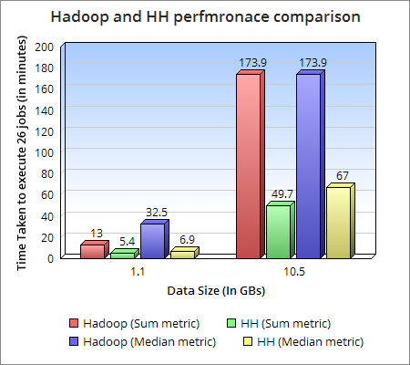

Hungry Hippos is a solution to the most common problem of faster data ingenstion and data processing. You can think of it as similar to Hadoop or Spark but is better in performance and it uses different data storage/replication strategy. Gains in performance are achieved becuase of better engineering of the product and its unique way of storing/replicating data with sharding dimensions.
While we were working on a problem of ingestion and processing of streams of data in real time, we found a unique way of storing data that utilizes replicated copies to shard the data across multiple dimensions. After doing some analysis, research and proof of concepts, we confirmed that we could build a system which can perform faster than existing solutions. So we decided to build a faster data ingestion and processing platform and HungryHippos is the culmination of that idea.
